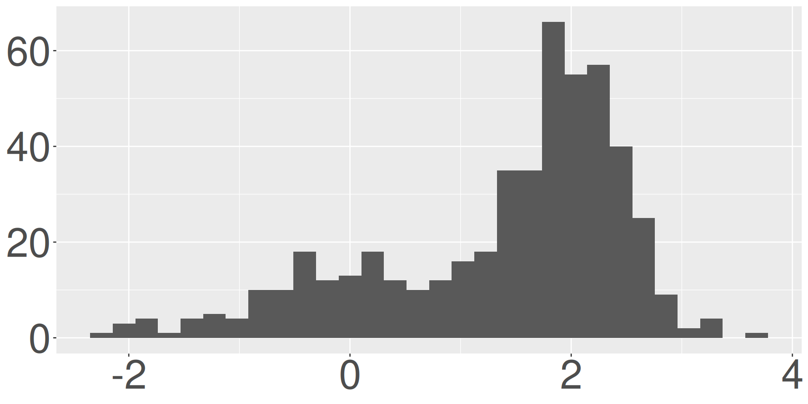
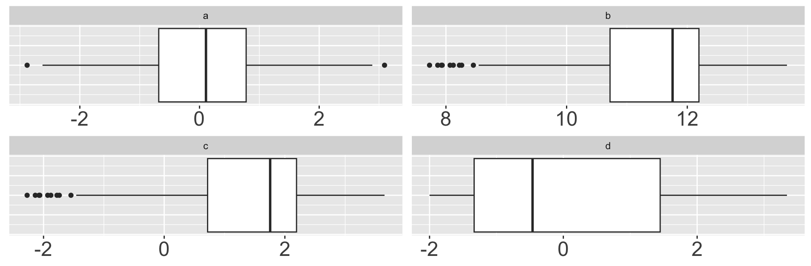
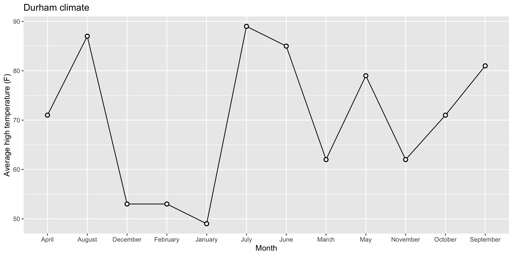
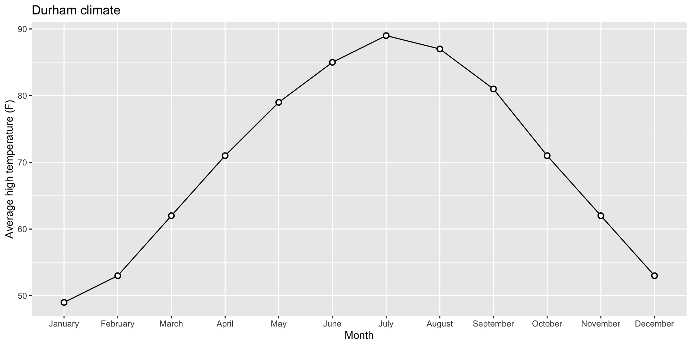
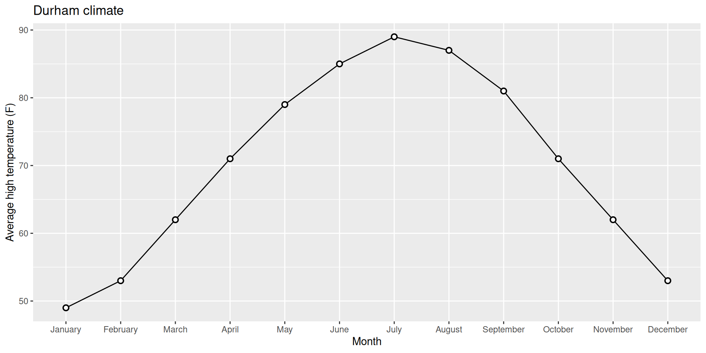
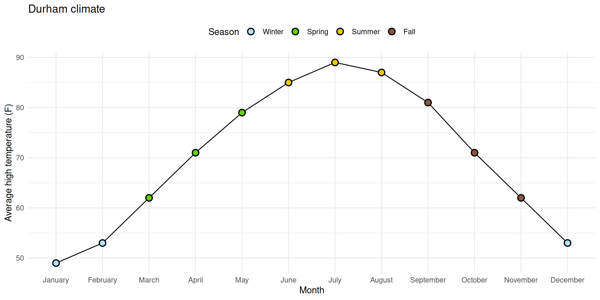
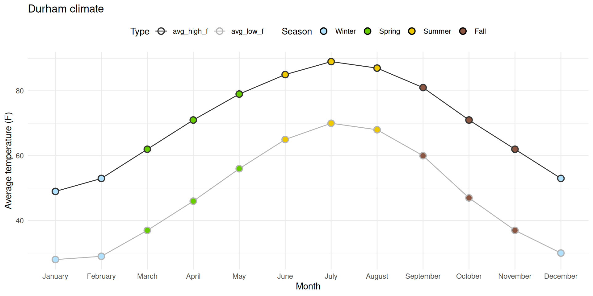

df# A tibble: 6 × 2
x y
<dbl> <chr>
1 1 Marie
2 2 Marie
3 3 Katie
4 4 Mary
5 5 Mary
6 6 Mary Lecture 10
Worth 20% of your final grade; consists of two parts:
In-class: worth 70% of the Midterm 1 grade;
Take-home: worth 30% of the Midterm 1 grade.
Everything we have done so far:
ggplot and interpreting plotsAll multiple choice
You get both sides of one 8.5” x 11” note sheet that you and only you created (written, typed, iPad, etc)
. . .
If you have testing accommodations, make sure I get proper documentation from SDAO and make appointments in the Testing Center ASAP. The appointment should overlap substantially with our class time if possible.
. . .
Don’t waste space on the details of any specific applications or datasets we’ve seen (penguins, Bechdel, gerrymandering, midwest, etc). Anything we want you to know about a particular application will be introduced from scratch within the exam.
Which command can replace a pre-existing column in a data frame with a new and improved version of itself?
group_bysummarizepivot_widergeom_replacemutatedf# A tibble: 6 × 2
x y
<dbl> <chr>
1 1 Marie
2 2 Marie
3 3 Katie
4 4 Mary
5 5 Mary
6 6 Mary Which box plot is visualizing the same data as the histogram?


What code could have been used to produce df_result? Select all that apply.
df_X
| state | year |
|---|---|
| LA | 2025 |
| NC | 2025 |
| LA | 2024 |
df_Y
| state | region |
|---|---|
| LA | south |
| NC | south |
| CA | west |
df_result
| state | year | region |
|---|---|---|
| LA | 2025 | south |
| NC | 2025 | south |
| LA | 2024 | south |
left_join(df_X, df_Y)right_join(df_X, df_Y)full_join(df_X, df_Y)anti_join(df_Y, df_X)right_join(df_Y, df_X)Yesterday: read an Excel file with non-tidy data

Yesterday: read an Excel file with non-tidy data
Goal: tidy up the data


We’ve seen lots of functions that deal with numeric data (mean, median, sum, etc.) - what about characters?
stringr is a tidyverse package with lots of functions for dealing with character strings
today: str_detect in stringr

str_detect() identifies if some characters are a substring of a larger string
useful in cases when you need to check some condition, for example:
in a filter()
in an if_else() or case_when()
str_detect() identifies if some characters are a substring of a larger string
useful in cases when you need to check some condition, for example:
in a filter()
in an if_else() or case_when()
example: which classes in a list are in the stats department?
classes <- c("sta199", "dance122", "math185", "sta240", "pubpol202")
str_detect(classes, "sta")[1] TRUE FALSE FALSE TRUE FALSEGeneral form:
str_detect(character_var, "word_to_detect")Open up yesterday’s AE file (AE-09).
sales_raw <- read_excel(
"data/sales.xlsx",
skip = 3,
col_names = c("id", "n")
)# A tibble: 9 × 2
id n
<chr> <chr>
1 Brand 1 n
2 1234 8
3 8721 2
4 1822 3
5 Brand 2 n
6 3333 1
7 2156 3
8 3987 6
9 3216 5 sales_raw # A tibble: 9 × 2
id n
<chr> <chr>
1 Brand 1 n
2 1234 8
3 8721 2
4 1822 3
5 Brand 2 n
6 3333 1
7 2156 3
8 3987 6
9 3216 5 sales_raw |>
mutate(
is_brand_name = str_detect(id, "Brand")
)# A tibble: 9 × 3
id n is_brand_name
<chr> <chr> <lgl>
1 Brand 1 n TRUE
2 1234 8 FALSE
3 8721 2 FALSE
4 1822 3 FALSE
5 Brand 2 n TRUE
6 3333 1 FALSE
7 2156 3 FALSE
8 3987 6 FALSE
9 3216 5 FALSE sales_raw |>
mutate(
is_brand_name = str_detect(id, "Brand"),
brand = if_else(is_brand_name, id, NA)
)# A tibble: 9 × 4
id n is_brand_name brand
<chr> <chr> <lgl> <chr>
1 Brand 1 n TRUE Brand 1
2 1234 8 FALSE <NA>
3 8721 2 FALSE <NA>
4 1822 3 FALSE <NA>
5 Brand 2 n TRUE Brand 2
6 3333 1 FALSE <NA>
7 2156 3 FALSE <NA>
8 3987 6 FALSE <NA>
9 3216 5 FALSE <NA> sales_raw |>
mutate(
is_brand_name = str_detect(id, "Brand"),
brand = if_else(is_brand_name, id, NA)
)|>
fill(brand)# A tibble: 9 × 4
id n is_brand_name brand
<chr> <chr> <lgl> <chr>
1 Brand 1 n TRUE Brand 1
2 1234 8 FALSE Brand 1
3 8721 2 FALSE Brand 1
4 1822 3 FALSE Brand 1
5 Brand 2 n TRUE Brand 2
6 3333 1 FALSE Brand 2
7 2156 3 FALSE Brand 2
8 3987 6 FALSE Brand 2
9 3216 5 FALSE Brand 2sales_raw |>
mutate(
is_brand_name = str_detect(id, "Brand"),
brand = if_else(is_brand_name, id, NA)
)|>
fill(brand)|>
filter(!is_brand_name)# A tibble: 7 × 4
id n is_brand_name brand
<chr> <chr> <lgl> <chr>
1 1234 8 FALSE Brand 1
2 8721 2 FALSE Brand 1
3 1822 3 FALSE Brand 1
4 3333 1 FALSE Brand 2
5 2156 3 FALSE Brand 2
6 3987 6 FALSE Brand 2
7 3216 5 FALSE Brand 2sales_raw |>
mutate(
is_brand_name = str_detect(id, "Brand"),
brand = if_else(is_brand_name, id, NA)
)|>
fill(brand)|>
filter(!is_brand_name)|>
select(brand, id, n)# A tibble: 7 × 3
brand id n
<chr> <chr> <chr>
1 Brand 1 1234 8
2 Brand 1 8721 2
3 Brand 1 1822 3
4 Brand 2 3333 1
5 Brand 2 2156 3
6 Brand 2 3987 6
7 Brand 2 3216 5 Data:
durham_climate # A tibble: 12 × 4
month avg_high_f avg_low_f precip
<chr> <dbl> <dbl> <dbl>
1 January 49 28 4.45
2 February 53 29 3.7
3 March 62 37 4.69
4 April 71 46 3.43
5 May 79 56 4.61
6 June 85 65 4.02
7 July 89 70 3.94
8 August 87 68 4.37
9 September 81 60 4.37
10 October 71 47 3.7
11 November 62 37 3.39
12 December 53 30 3.43Original Plot:

Releveling Months:

Goal:



# A tibble: 12 × 4
month avg_high_f avg_low_f precip
<fct> <dbl> <dbl> <dbl>
1 January 49 28 4.45
2 February 53 29 3.7
3 March 62 37 4.69
4 April 71 46 3.43
5 May 79 56 4.61
6 June 85 65 4.02
7 July 89 70 3.94
8 August 87 68 4.37
9 September 81 60 4.37
10 October 71 47 3.7
11 November 62 37 3.39
12 December 53 30 3.43Take a look at the printout!W hat does each highlighted portion do?

Go ahead and pull today’s AE - mess around with the code.


# A tibble: 3 × 5
month avg_high_f avg_low_f precip season
<fct> <dbl> <dbl> <dbl> <fct>
1 January 49 28 4.45 Winter
2 February 53 29 3.7 Winter
3 March 62 37 4.69 Spring# A tibble: 5 × 5
month avg_high_f avg_low_f precip season
<fct> <dbl> <dbl> <dbl> <fct>
1 January 49 28 4.45 Winter
2 February 53 29 3.7 Winter
3 March 62 37 4.69 Spring
4 April 71 46 3.43 Spring
5 May 79 56 4.61 Spring# A tibble: 5 × 5
month precip season temp_type temp
<fct> <dbl> <fct> <chr> <dbl>
1 January 4.45 Winter avg_high_f 49
2 January 4.45 Winter avg_low_f 28
3 February 3.7 Winter avg_high_f 53
4 February 3.7 Winter avg_low_f 29
5 March 4.69 Spring avg_high_f 62Add your pivot code to today’s AE. Check out the plotting code! What is going on?